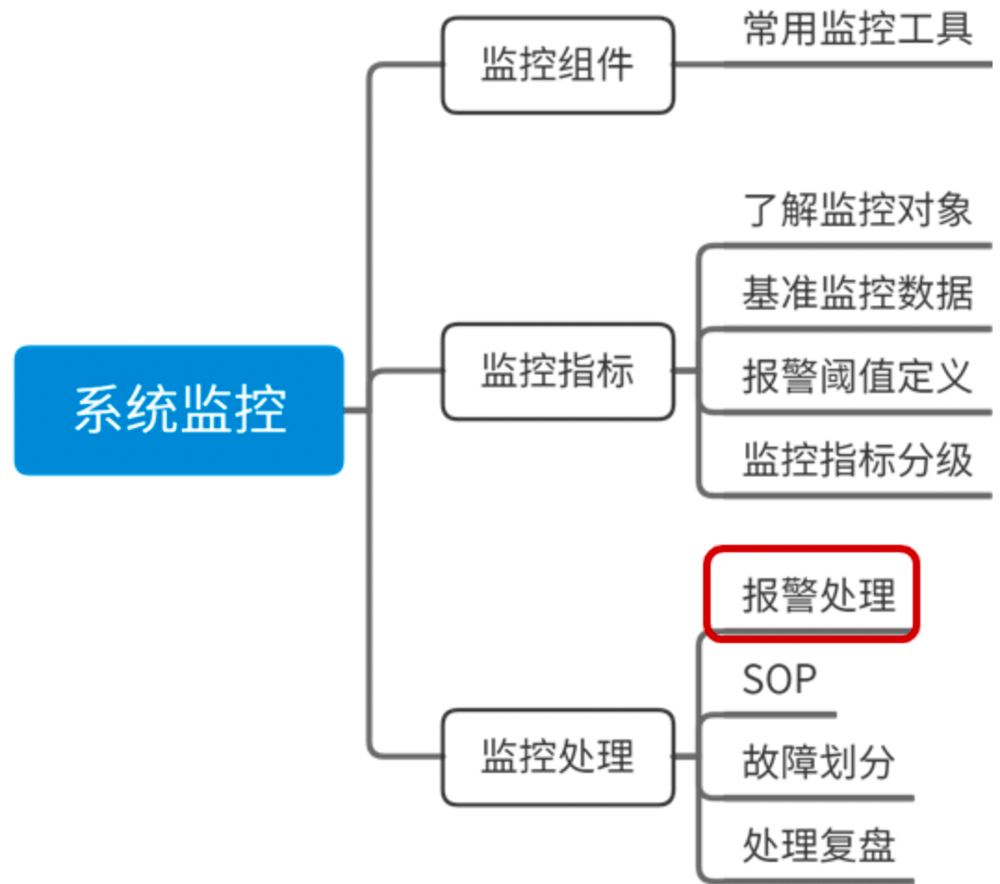

01 如何证明分布式系统的 CAP 理论？
CAP 理论可以表述为，一个分布式系统最多只能同时满足一致性（Consistency）、可用性（Availability）和分区容忍性（Partition Tolerance）这三项中的两项。 CAP 理论的证明有多种方式，通过反证的方式是最直观的。反证法来证明 CAP 定理，最早是由 Lynch 提出的，通过一个实际场景，如果 CAP 三者可同时满足， 由于允许 P 的存在，则一定存在 Server 之间的丢包，如此则不能保证 C。
避免单点故障 + 无状态服务
- CP 架构：对于 CP 来说，放弃可用性，追求一致性和分区容错性。
- 我们熟悉的 ZooKeeper，就是采用了 CP 一致性，ZooKeeper 是一个分布式的服务框架，主要用来解决分布式集群中应用系统的协调和一致性问题。其核心算法是 Zab，所有设计都是为了一致性。在 CAP 模型中，ZooKeeper 是 CP，这意味着面对网络分区时，为了保持一致性，它是不可用的。
- AP 架构：对于 AP 来说，放弃强一致性，追求分区容错性和可用性，这是很多分布式系统设计时的选择，后面的 Base 也是根据 AP 来扩展的。
- Eureka，不保证一致性
02 不同数据一致性模型有哪些应用？
BASE: 基本可用(Basically Available)，软状态(Soft-state)，最终一致性(Eventually consistent)
不同数据一致性模型
- 强一致性: 更新之后，后续访问都是最新值
- 弱一致性: 不承诺可以立即读取到最新写入的值，也不承诺多久可以读取到。（不一致性窗口
- 最终一致性
- 因果一致性: 有因果关系的操作顺序得到保证，非因果关系的操作顺序无所谓。比如你对一条评论的回复，你的回复必须在评论之后。
- 会话一致性: 同一个会话中“读已之所写”。同一个会话始终可以访问到最新值
- 单调读一致性
- 单调写一致性
03 如何透彻理解 Paxos 算法
- Proposer 提案者: Proposer 可以有多个，在流程开始时，Proposer 提出议案，也就是value，所谓 value，在工程中可以是任何操作， 比如“修改某个变量的值为某个新值”，Paxos 协议中统一将这些操作抽象为 value。 不同的 Proposer 可以提出不同的甚至矛盾的 value，比如某个 Proposer 提议“将变量 X 设置为 1”，另一个 Proposer 提议“将变量 X 设置为 2”，但对同一轮 Paxos 过程，最多只有一个 value 被批准。
- Acceptor 批准者: 在集群中，Acceptor 有 N 个，Acceptor 之间完全对等独立，Proposer 提出的 value 必须获得超过半数（N/2+1）的 Acceptor 批准后才能通过。
- Learner 学习者: Learner 不参与选举，而是学习被批准的 value，在Paxos中，Learner主要参与相关的状态机同步流程。
这里Leaner的流程就参考了Quorum 议会机制，某个 value 需要获得 W=N/2 + 1 的 Acceptor 批准，Learner 需要至少读取 N/2+1 个 Accpetor，最多读取 N 个 Acceptor 的结果后，才能学习到一个通过的 value。
04 ZooKeeper 如何保证数据一致性
数据发布和订阅、命名服务、配置中心、注册中心、分布式锁等。
Zab 协议的具体实现可以分为以下两部分：
Leader 节点接受事务提交，并且将新的 Proposal 请求广播给 Follower 节点，收集各个节点的反馈，决定是否进行 Commit，在这个过程中，也会使用上一课时提到的 Quorum 选举机制。 如果在同步过程中出现 Leader 节点宕机，会进入崩溃恢复阶段，重新进行 Leader 选举，崩溃恢复阶段还包含数据同步操作，同步集群中最新的数据，保持集群的数据一致性。 整个 ZooKeeper 集群的一致性保证就是在上面两个状态之前切换，当 Leader 服务正常时，就是正常的消息广播模式；当 Leader 不可用时，则进入崩溃恢复模式，崩溃恢复阶段会进行数据同步，完成以后，重新进入消息广播阶段。
07 分布式事务有哪些解决方案
- 2PC/3PC (two-phase commit protocl): 两阶段提交
- TCC分段提交: 将事务拆分成 try/confirm/cancel 三个步骤
- 基于消息补偿的最终一致性
- 本地消息表: 生产方创建一个事务消息表，并记录消息发送状态。消费方需要处理这个消息并完成业务逻辑。另有一个异步机制定期扫描为未完成消息，保证最终一致性
- 统收到下单请求，将订单业务数据存入到订单库中，并且同时存储该订单对应的消息数据，比如购买商品的 ID 和数量，消息数据与订单库为同一库，更新订单和存储消息为一个本地事务，要么都成功，要么都失败。
- 库存服务通过消息中间件收到库存更新消息，调用库存服务进行业务操作，同时返回业务处理结果。
- 消息生产方，也就是订单服务收到处理结果后，将本地消息表的数据删除或者设置为已完成。
- 设置异步任务，定时去扫描本地消息表，发现有未完成的任务则重试，保证最终一致性。
- 第三方可靠消息队列
- 本地消息表: 生产方创建一个事务消息表，并记录消息发送状态。消费方需要处理这个消息并完成业务逻辑。另有一个异步机制定期扫描为未完成消息，保证最终一致性
08 对比两阶段提交，三阶段协议哪些改进
两阶段提交
- 提交请求阶段
在提交请求阶段，协调者将通知事务参与者准备提交事务，然后进入表决过程。在表决过程中，参与者将告知协调者自己的决策：同意（事务参与者本地事务执行成功）或取消（本地事务执行故障），在第一阶段，参与节点并没有进行Commit操作。
- 提交阶段
在提交阶段，协调者将基于第一个阶段的投票结果进行决策：提交或取消这个事务。这个结果的处理和前面基于半数以上投票的一致性算法不同，必须当且仅当所有的参与者同意提交，协调者才会通知各个参与者提交事务，否则协调者将通知各个参与者取消事务。
参与者在接收到协调者发来的消息后将执行对应的操作，也就是本地 Commit 或者 Rollback。
mysql cluster 内部数据的同步就是用的2pc协议。
三阶段提交
- CanCommit 阶段
3PC 的 CanCommit 阶段其实和 2PC 的准备阶段很像。协调者向参与者发送 Can-Commit 请求，参与者如果可以提交就返回 Yes 响应，否则返回 No 响应。
- PreCommit 阶段
协调者根据参与者的反应情况来决定是否可以继续事务的 PreCommit 操作。根据响应情况，有以下两种可能。
A. 假如协调者从所有的参与者获得的反馈都是 Yes 响应，那么就会进行事务的预执行：
- 发送预提交请求，协调者向参与者发送 PreCommit 请求，并进入 Prepared 阶段；
- 事务预提交，参与者接收到 PreCommit 请求后，会执行事务操作；
- 响应反馈，如果参与者成功执行了事务操作，则返回 ACK 响应，同时开始等待最终指令。
B. 假如有任何一个参与者向协调者发送了 No 响应，或者等待超时之后，协调者都没有接到参与者的响应，那么就中断事务：
- 发送中断请求，协调者向所有参与者发送 abort 请求；
- 中断事务，参与者收到来自协调者的 abort 请求之后，执行事务的中断。
- DoCommit 阶段
该阶段进行真正的事务提交，也可以分为以下两种情况。
A. 执行提交
- 发送提交请求。协调者接收到参与者发送的 ACK 响应后，那么它将从预提交状态进入到提交状态，并向所有参与者发送 doCommit 请求。
- 事务提交。参与者接收到 doCommit 请求之后，执行正式的事务提交，并在完成事务提交之后释放所有事务资源。
- 响应反馈。事务提交完之后，向协调者发送 ACK 响应。
- 完成事务。协调者接收到所有参与者的 ACK 响应之后，完成事务。
B. 中断事务 协调者没有接收到参与者发送的 ACK 响应，可能是因为接受者发送的不是 ACK 响应，也有可能响应超时了，那么就会执行中断事务。
C.超时提交 参与者如果没有收到协调者的通知，超时之后会执行 Commit 操作。
09 MySQL 数据库如何实现 XA 规范?
XA 规范是如何定义的: XA 是由 X/Open 组织提出的分布式事务规范，XA 规范主要定义了事务协调者（Transaction Manager）和资源管理器（Resource Manager）之间的接口。
mysql 当有事务提交时：
第一步，InnoDB 进入 Prepare 阶段，并且 write/sync redo log，写 redo log，将事务的 XID 写入到 redo 日志中，binlog 不作任何操作； 第二步，进行 write/sync Binlog，写 binlog 日志，也会把 XID 写入到 Binlog； 第三步，调用 InnoDB 引擎的 Commit 完成事务的提交，将 Commit 信息写入到 redo 日志中。
10 如何在业务中体现 TCC 事务模型？
TCC 提出了一种新的事务模型，基于业务层面的事务定义，锁粒度完全由业务自己控制，目的是解决复杂业务中，跨表跨库等大颗粒度资源锁定的问题。 TCC 把事务运行过程分成 Try、Confirm / Cancel 两个阶段，每个阶段的逻辑由业务代码控制，避免了长事务，可以获取更高的性能。
- Try 阶段：调用 Try 接口，尝试执行业务，完成所有业务检查，预留业务资源。
- Confirm 或 Cancel 阶段：两者是互斥的，只能进入其中一个，并且都满足幂等性，允许失败重试。
- Confirm 操作：对业务系统做确认提交，确认执行业务操作，不做其他业务检查，只使用 Try 阶段预留的业务资源。
- Cancel 操作：在业务执行错误，需要回滚的状态下执行业务取消，释放预留资源。
Try 阶段失败可以 Cancel，如果 Confirm 和 Cancel 阶段失败了怎么办？
TCC 中会添加事务日志，如果 Confirm 或者 Cancel 阶段出错，则会进行重试，所以这两个阶段需要支持幂等；如果重试失败，则需要人工介入进行恢复和处理等。
真实业务场景改造
我们把订单业务拆解为以下几个步骤：
- 订单更新为支付完成状态
- 扣减用户账户余额
- 增加用户账户积分
- 扣减当前商品的库存
下面应用 TCC 事务，需要对业务代码改造，抽象 Try、Confirm 和 Cancel 阶段。
Try 操作一般都是锁定某个资源，设置一个预备的状态，冻结部分数据。比如，订单服务添加一个预备状态，修改为 UPDATING，也就是更新中的意思，冻结当前订单的操作，而不是直接修改为支付成功。
库存服务设置冻结库存，可以扩展字段，也可以额外添加新的库存冻结表。积分服务和库存一样，添加一个预增加积分，比如本次订单积分是 100，添加一个额外的存储表示等待增加的积分，账户余额服务等也是一样的操作。
Confirm 操作就是把前边的 Try 操作锁定的资源提交，类比数据库事务中的 Commit 操作。在支付的场景中，包括订单状态从准备中更新为支付成功；库存数据扣减冻结库存，积分数据增加预增加积分。
Cancel 操作执行的是业务上的回滚处理，类比数据库事务中的 Rollback 操作。首先订单服务，撤销预备状态，还原为待支付状态或者已取消状态，库存服务删除冻结库存，添加到可销售库存中，积分服务也是一样，将预增加积分扣减掉。
执行业务操作
下面来分析业务的实际执行操作，首先业务请求过来，开始执行 Try 操作，如果 TCC 分布式事务框架感知到各个服务的 Try 阶段都成功了以后，就会执行各个服务的 Confirm 逻辑。
如果 Try 阶段有操作不能正确执行，比如订单失效、库存不足等，就会执行 Cancel 的逻辑，取消事务提交。
开源框架：Tcc-transaction, ByteTCC, Spring-cloud-rest-tcc, Seata(支持TCC,AT,Saga)
11 分布式锁有哪些场景和实现
- 基于数据库: 依赖数据库唯一性，主键或者唯一索引。存在单点故障、无法失效、不可重入、无法实现阻塞
- redis : setnx + expire (lua或者新版set保证原子性)
- ZooKeeper: 临时顺序节点 (Apache Curator)
12 redis实现分布式锁
一般来说，生产环境可用的分布式锁需要满足以下几点：
- 互斥性，互斥是锁的基本特征，同一时刻只能有一个线程持有锁，执行临界操作；
- 超时释放，超时释放是锁的另一个必备特性，可以对比 MySQL InnoDB 引擎中的 innodb_lock_wait_timeout 配置，通过超时释放，防止不必要的线程等待和资源浪费；
- 可重入性，在分布式环境下，同一个节点上的同一个线程如果获取了锁之后，再次请求还是可以成功；
- 高性能和高可用，加锁和解锁的开销要尽可能的小，同时也需要保证高可用，防止分布式锁失效；
- 支持阻塞和非阻塞性，对比 Java 语言中的 wait() 和 notify() 等操作，这个一般是在业务代码中实现，比如在获取锁时通过 while(true) 或者轮询来实现阻塞操作。
redis实现细节：
- 设置一个 uuid 保证只能被加锁的线程释放
- redis + lua 保证原子性
- 记录日志和上下游数据链路
- 集群下使用 redlock 算法。大于 3 个奇数个独立的 redis 节点
- 一般使用单点的 redis 实现分布式锁就可以，出现数据不一致及时监控报警人工修补
14 如何理解 RPC 远程服务调用？
- 如何通信。Netty 等网络框架
- 如何网络传输。协议类型。Protobuf, Dubbo协议等
- 服务注册和发现。注册中心存储存储了服务的 ip、端口、调用方式（协议）等
15 为什么微服务需要API网关
在微服务设计中，需要隔离内外部调用，统一进行系统鉴权、业务监控等，API 服务网关是一个非常合适的切入口。
通过引入 API 网关这一角色，可以高效地实现微服务集群的输出，节约后端服务开发成本，减少上线风险，并为服务熔断、灰度发布、线上测试等提供解决方案。
除了封装内部系统之外，API 网关作为一个系统访问的切面，还可以添加身份验证、监控、负载均衡、限流、降级与应用检测等功能。
Spring Cloud Zuul, Spring Cloud Gateway
16 如何实现服务注册和发现
首先，在服务启动时，服务提供者会向注册中心注册服务，暴露自己的地址和端口等，注册中心会更新服务列表。 服务消费者启动时会向注册中心请求可用的服务地址，并且在本地缓存一份提供者列表，这样在注册中心宕机时仍然可以正常调用服务。
如果提供者集群发生变更，注册中心会将变更推送给服务消费者，更新可用的服务地址列表。
ZooKeeper(CP), Eureka(AP), Nacos(AP/CP切换), Consul
17 如何实现分布式调用跟踪？
Google Dapper 论文
Dapper 用 Span 来表示一个服务调用开始和结束的时间，也就是时间区间，并记录了 Span 的名称以及每个 Span 的 ID 和父 ID，如果一个 Span 没有父 ID 则被称之为 Root Span。
一个请求到达应用后所调用的所有服务，以及所有服务组成的调用链就像是一个树结构，追踪这个调用链路得到的树结构称之为 Trace，所有的 Span 都挂在一个特定的 Trace 上，共用一个 TraceId。
在一次 Trace 中，每个服务的每一次调用，就是一个 Span，每一个 Span 都有一个 ID 作为唯一标识。同样，每一次 Trace 都会生成一个 TraceId 在 Span 中作为追踪标识，另外再通过一个 parentSpanId，标明本次调用的发起者。
当 Span 有了上面三个标识后，就可以很清晰地将多个 Span 进行梳理串联，最终归纳出一条完整的跟踪链路。
Google Dapper, Twitter Zipkin, Jager, 阿里EagleEye
18 分布式下如何实现配置管理
实现配置管理中心，一般需要下面几个步骤:
- 提取配置信息，放到一个公共的地方存储，比如文件系统、数据库、Redis；
- 使用发布/订阅模式，让子系统订阅这些配置信息； （或者客户端拉取的模式）
- 对外开放可视化的配置管理中心，对配置信息进行操作维护。
一个合格的分布式配置管理系统，除了配置发布和推送，还需要满足以下的特性:
- 高可用性，服务器集群应该无单点故障，只要集群中还有存活的节点，就能提供服务；
- 容错性，保证在配置平台不可用时，也不影响客户端的正常运行；
- 高性能，对于配置平台，应该是尽可能低的性能开销，不能因为获取配置给应用带来不可接受的性能损耗；
- 可靠存储，包括数据的备份容灾，一致性等，尽可能保证不丢失配置数据；
- 实时生效，对于配置的变更，客户端应用能够及时感知。
开源系统：淘宝 Diamond, 百度Disconf(ZooKeeper), 携程 Apollo
19 容器化升级对服务有哪些影响
容器基于 linux 的Namespace 和 CGroups 技术
Namespace
Namespace 的目的是通过抽象方法使得 Namespace 中的进程看起来拥有它们自己的隔离的全局系统资源实例。 Linux 内核实现了六种 Namespace：Mount namespaces、UTS namespaces、IPC namespaces、PID namespaces、Network namespaces、User namespaces，功能分别为：隔离文件系统、定义 hostname 和 domainame、特定的进程间通信资源、独立进程 ID 结构、独立网络设备、用户和组 ID 空间。
Docker 在创建一个容器的时候，会创建以上六种 Namespace 实例，然后将隔离的系统资源放入到相应的 Namespace 中，使得每个容器只能看到自己独立的系统资源。
Cgroups
Docker 利用 CGroups 进行资源隔离。CGroups（Control Groups）也是 Linux 内核中提供的一种机制，它的功能主要是限制、记录、隔离进程所使用的物理资源，比如 CPU、Mermory、IO、Network 等。
简单来说，CGroups 在接收到调用时，会给指定的进程挂上钩子，这个钩子会在资源被使用的时候触发，触发时会根据资源的类别，比如 CPU、Mermory、IO 等，然后使用对应的方法进行限制。
CGroups 中有一个术语叫作 Subsystem 子系统，也就是一个资源调度控制器，CPU Subsystem 负责 CPU 的时间分配，Mermory Subsystem 负责 Mermory 的使用量等。Docker 启动一个容器后，会在 /sys/fs/cgroup 目录下生成带有此容器 ID 的文件夹，里面就是调用 CGroups 的配置文件，从而实现通过 CGroups 限制容器的资源使用率。
注意服务如何获取正确的核心数，比如 go 有一个 automaxprocs 库。
20 ServiceMesh: 服务网格有哪些应用
Sidercar边车模式
Service Mesh 可以认为是边车模式的进一步扩展，提供了以下功能：
- 管理服务注册和发现
- 提供限流和降级功能
- 前置的负载均衡
- 服务熔断功能
- 日志和服务运行状态监控
- 管理微服务和上层容器的通信
开源解决方案：Istio, Linkerd
23 读写分离如何在业务中落地
mysql 主从复制过程：
- 主库将变更写入 binlog 日志，从库连接到主库之后，主库会创建一个log dump 线程，用于发送 bin log 的内容。
- 从库开启同步以后，会创建一个 IO 线程用来连接主库，请求主库中更新的 bin log，I/O 线程接收到主库 binlog dump 进程发来的更新之后，保存在本地 relay 日志中。
- 接着从库中有一个 SQL 线程负责读取 relay log 中的内容，同步到数据库存储中，也就是在自己本地进行回放，最终保证主从数据的一致性。
问题：
- 主从延时。高并发场景下，可能要等待几十毫秒甚至上百毫秒以后从库才能访问到
- 强制读取主库
- 一致性要求高的业务比如金融支付，不进行读写分离
- 丢数据。极端场景主库宕机，数据还没有同步到从库
- 异步复制(不关心从库是否同步成功)、半同步(至少一个从库同步完成，才完成写操作)、全同步复制(性能最差)
24 分库分表如何实现
引入问题：
- 分布式事务
- 跨库查询。字段冗余
中间件：Apache ShardingSphere, 淘宝TDDL
25 唯一主键问题
全局唯一、有序性、高并发
- uuid。不适合，长度太长又是非自增(数据库页分裂)
- snowflake 算法。 符号位(1) + 41位时间戳 + 10位机器 id + 12位序列号 。可能有时钟回拨问题
- 数据库维护区间分配
- redis incr (随机增加，防止被遍历)
26 分库分表后，如何实现扩容？
路由规则与扩容方案
- 哈希取模
- 停机扩容
- 不停机扩容：双写
如果重新部署新的数据库存储，可以粗略地分为以下的步骤：
- 创建一套新的订单数据库；
- 在某个时间点上，将历史数据按照新的路由规则分配到新的数据库中；
- 在旧数据库的操作中开启双写，同时写入到两个数据库；
- 用新的读写服务逐步替代旧服务，同步进行数据不一致校验，最后完成全面切流。
- 数据范围拆分
扩容可以直接增加新的存储，新数据区间映射到新的节点中，不用在节点时间调整，也不用迁移历史数据。缺点是数据可能不均匀
- 结合数据范围和哈希取模
首先根据订单 ID 哈希取模，然后对取模后的数据再次进行范围分区。结合两者优点
27 NoSQL 数据库的典型应用
- Key-Value 存储: 基于内存的 Redis, Memcached。基于 SSD 的 RocksDB, LevelDB
- 文档型。MongoDB
- 列式存储：海量数据, Cassandra, Hbase。高并发写入性能更好
- 图形数据库。
- 索引型：Elasticsearch
28 Elasticsearch 是如何建立索引的？
Elasticsearch 基于 Lucene 的分布式全文检索框架。倒排索引
ELK: Elasticsearch 数据分析和检索, Logstash 用于日志收集， Kibana 用于界面展示
30 消息队列有哪些应用场景
- 系统解耦
- 异步处理。流量削峰
- 请求缓冲
- 数据分发
常见队列：
- Apache Kafka
- Apache RocketMQ(阿里 java 开源)。尽可能保证消息投递中的顺序一致性和可靠性。特别适合电商等相对复杂业务场景
- Apache RabbitMQ (Erlang)。一旦出现堆积性能下降比较快，适合企业应用
如果在一个电商系统的构建中，这三款消息队列可以怎样组合使用呢？
- Kafka 可以在各类数据埋点中使用，比如电商营销的转化率日志收集和计算，另外，Kafka 的高性能使得特别它适合应用在各类监控、大数据分析等场景。
- RocketMQ 对一致性的良好保证，可以应用在电商各级业务调用的拆分中，比如在订单完成后通知用户，物流信息更新以后对订单状态的更新等。
- RabbitMQ 则可以在数据迁移、系统内部的业务调用中应用，比如一些后台数据的同步、各种客服和 CRM 系统。
31 集群消费和广播消费有什么区别
消息队列的消费模型
- 点对点模型
在点对点模型下，生产者向一个特定的队列发布消息，消费者从该队列中读取消息，每条消息只会被一个消费者处理。
- 发布订阅模型
大部分人在浏览资讯网站时会订阅喜欢的频道，比如人文社科，或者娱乐新闻，消息队列的发布订阅也是这种机制。在发布订阅模型中， 消费者通过一个 Topic 来订阅消息，生产者将消息发布到指定的队列中。如果存在多个消费者，那么一条消息就会被多个消费者都消费一次。
32 业务需要顺序消费，如何保证时序性？
保证时序性的难点：
- 分布式时钟问题。不同机器时钟不同，所以不能用时间作为判断标准
- 消息发送端和消费端的集群
- 消息重传
- 网络和内部并发
kafka 顺序消息：
- 发到单个partition; 同一类别消息发到同一个 partition
- 一个比较特殊的情况是消息失败重发的场景，比如同一个订单下的消息 1 和 2，如果 1 发送失败了，重发的时候可能会出现在 2 的后边， 种情况可以通过设置“max.in.flight.requests.per.connection”参数来解决，该参数可以限制客户端能够发送的未响应请求的个数，还可以在一定程度上避免这种消息乱序。
RocketMQ 顺序消息：
- 和 kafka 类似，同一个 queue 中的顺序
业务角度保证顺序消费: 合理的设计方案
- 秒杀提交时服务端的时间戳(不用绝对有序)
- 消息添加单调自增的序列 id
33. 消息幂等：如何保证消息不被重复消息
以 Apache Dubbo 为例，它支持多种集群容错的方式，并且可以针对业务特性，配置不同的失败重试机制，包括 Failover 失败自动切换、Failsafe 失败安全、Failfast 快速失败等。 比如在 Failover 下，失败会重试两次；在 Failfast 下，失败则不会重试，直接抛出异常。
- 天然幂等无需处理。允许重试的，可以配置消息队列通过合理重试，提高请求成功率
- 数据库去重。去重表；唯一索引
- 全局唯一消息 id
34. 高可用：如何实现消息队列的 HA？
kafka 多副本机制
35. 消息队列选型：kafka如何实现高性能？
- 磁盘顺序读写。kafka 可以配置异步刷盘，提高吞吐量
- 批量操作优化。批量发送和拉取；消息压缩协议
- sendfile 零拷贝: Kafka 依赖 Linux 内核提供的 Sendfile 系统调用。 在 Sendfile 方法中，数据在内核缓冲区完成输入和输出，不需要拷贝到用户空间处理，这也就避免了重复的数据拷贝
- Kafka 把所有的消息都存放在单独的文件里，在消息投递时直接通过 Sendfile 方法发送文件，减少了上下文切换，因此大大提高了性能。
- MMAP 技术。内存映射。 MMAP 可以将文件直接映射到用户态的内存空间，省去了用户空间到内核空间复制的开销，所以说 MMAP 也是一种零拷贝技术。
36. 消息队列选型：RocketMQ 适用场景
- 实现 Binlog 分发。结合阿里 Canal
- 实现分布式一致性。支持事务消息
38. 分布式系统还有哪些缓存？
- 前端缓存。页面和浏览器缓存
- 网络传输缓存。CDN
- 服务端缓存。本地缓存和外部缓存
- 数据库缓存
39. 如何避免缓存穿透、击穿、雪崩？
- 穿透：请求查询不存在数据或者大量缓存同时失效落到数据库
- 缓存空值
- 布隆过滤器
- 击穿：热点 key 失效导致请求全部落到数据库(可以看成穿透的一种特殊场景)
- 雪崩：大量缓存同时失效导致数据库压力过大宕机；缓存 redis 宕机
- 明确缓存集群容量峰值，通过合理限流和降级，防止大量请求拖垮缓存
- 集群高可用
缓存稳定性：
- 缓存数据。一般要命中率 90%以上，大促销等场景会要求 99% 以上命中率
- 缓存集群稳定性。缓存服务压测，明确最大水位，超过就限流等处理
40: 先更新数据库，还是先更新缓存？
更新缓存的方式
- 先更新数据库，再更新缓存。
- 先删缓存，再更新数据库
- 先更新数据库，再删除缓存 (不一致概率最小)
为什么删除缓存而不是更新缓存:
- 1.删除更轻量级
- 2.长时间不用的缓存可以清理节省空间
多级缓存如何更新
- 消息队列通知。也就是在数据库更新后，通过事务性消息队列加监听的方式，失效对应的缓存。
- 多级缓存难保证一致性， 通常是用在数据一致性不敏感业务。（或者保证会话一致性 or 单调度一致性）
- 版本号、时间戳+主键，实现最终一致性
41. 失效策略：缓存过期都有哪些策略？
页面置换算法：FIFO, LRU, LFU
redis 内存淘汰策略：
- noeviction，这是默认的策略，对于写请求会拒绝服务，直接返回错误，这种策略下可以保证数据不丢失；
- allkeys-lru，这种策略操作的范围是所有 key，使用 LRU 算法进行缓存淘汰；
- volatile-lru，这种策略操作的范围是设置了过期时间的 key，使用 LRU 算法进行淘汰；
- allkeys-random，这种策略下操作的范围是所有 key，会进行随机淘汰数据；
- volatile-random，这种策略操作的范围是设置了过期时间的 key，会进行随机淘汰；
- volatile-ttl，这种策略操作的范围是设置了过期时间的 key，根据 key 的过期时间进行淘汰，越早过期的越优先被淘汰。
42. 负载均衡：一致性哈希解决了哪些问题？
- 哈希取模
- 一致性哈希
45. 从双十一看高可用保障方式
系统限流、降级熔断、负载均衡、稳定性指标、系统监控、日志系统
提高可用性手段：缓存、池化、异步化、负载均衡、队列、限流降级熔断
- 海量用户请求，万倍日常流量
- 流量突增。独立热点集群部署、消息队列削峰、商品缓存预热
- 高并发，海量用户请求。订单丢失、扣减库存异常、超卖等问题、锁冲突死锁等
- 高可用常见手段：缓存、消息队列
- 避免雪崩、链路问题、故障传导。限流、降级、熔断、隔离
自动降级策略：
- 超时降级
- 失败次数降级
- 故障降级
46. 高并发场景下如何实现系统限流？
限流一般需要结合容量规划和压测进行。超出之后降级策略：延迟处理、拒绝服务、随机拒绝等
- AbortPolicy, 丢弃任务并抛出异常
- DiscardPolicy, 丢弃任务不抛出异常
- DiscardOldestPolicy 等
常见限流算法：
- 计数器算法。
- 可以从单点扩展到集群，适合分布式环境。单点使用内存，分布式使用 redis 等存储
- 对临界流量不友好，限流不够平滑。可以用滑动窗口优化
- 漏桶
- 令牌桶。允许突发流量。 acquire(阻塞), tryAcquire(非阻塞)
47. 降级和熔断：如何增强服务稳定性？
降级
降级：解决资源不足和海量请求之间的矛盾。
手段：流量暴增时，对非核心流程业务、非关键业务，进行有策略的放弃，以此释放系统资源，保证核心业务正常运行。
比如大促时候的评论、退款功能。
- 梳理核心流程。哪些可以降级
- 系统在一定水位开启。一般通过配置中心开关
熔断
保护系统不被外部大流量或者下游系统的异常拖垮，防止雪崩。
Alibaba Sentinel 或者 Netflix Hystrix
熔断器的恢复时间，也就是平均故障恢复时间，称为 MTTR，在稳定性设计中是一个常见的指标，在 Hystrix 的断路器设计中，有以下几个状态。
- Closed：熔断器关闭状态，比如系统检测到下游失败到了 50% 的阈值，会开启熔断。
- Open：熔断器打开状态，此时对下游的调用在内部直接返回错误，不发出请求，但是在一定的时间周期以后，会进入下一个半熔断状态。
- Half-Open：半熔断状态，允许少量的服务请求，如果调用都成功（或一定比例）则认为恢复了，关闭熔断器，否则认为还没好，又回到熔断器打开状态。
48 如何选择适合业务的负载均衡策略？
- 硬件负载均衡，就是通过专门的硬件来实现负载均衡，比如常见的 F5 设备。
- 软件负载均衡则是通过负载均衡软件实现，常见的就是 Nginx。
常见负载均衡策略：
- 轮询策略。顺序从服务器列表中选择一个节点
- 加权轮询
- 随机策略
- 最小响应时间
- 最小并发数
- 哈希策略
如何实现：
- 在服务器端负载均衡中，请求先发送到负载均衡服务器，然后通过负载均衡算法，在众多可用的服务器之中选择一个来处理请求。
- 在客户端负载均衡中，不需要额外的负载均衡软件，客户端自己维护服务器地址列表，自己选择请求的地址，通过负载均衡算法将请求发送至该服务器。
Spring Cloud Eureka, Ribbon
49 线上服务有哪些稳定性指标？
监控组件、键控指标、监控处理

稳定性指标：稳定性指标，这里我按照自己的习惯，把它分为服务器指标、系统运行指标、基础组件指标和业务运行时指标。
每个分类下面我选择了部分比较有代表性的监控项，如果你还希望了解更多的监控指标，可以参考 Open-Falcon 的监控采集，地址为 Linux 运维基础采集项。
50 分布式下有哪些监控组件？
- OpenFalcon
- Zabbix
- Nagios
- CAT
监控处理制度：
- 发现故障，第一时间同步到相关业务负责人，上下游链路；
- 第一时间快速恢复业务，快速进行故障止血；
- 及时协调资源，避免故障升级；
- 事后进行故障复盘和总结，避免再次出现类似问题。
51 分布式下如何实现统一日志系统？
ELK 统一日志系统: Elasticsearch, Logstash, Kibana